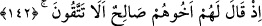

154. Sen de ancak bizim gibi bir insansın. Eğer doğru söyleyenlerden isen, haydi
bize bir mucize getir.
155. Salih: İşte (mucize) bu dişi devedir; onun bir su içme hakkı vardır, belli bir
günün içme hakkı da sizindir, dedi.
156. Ona bir kötülükle ilişmeyin, yoksa sizi muazzam bir günün azâbı
yakalayıverir.
157. Buna rağmen onlar deveyi kestiler; ama pişman da oldular.
158. Bunun üzerine onları azap yakaladı. Doğrusu bunda, büyük bir ders vardır;
ama çokları iman etmezler.
159. Şüphesiz Rabbin, işte O, mutlak galip ve engin merhamet sahibidir.
“Semûd (kavmi) de peygamberleri” Sâlih (a.s.)’ı ve ondan önceki peygamberi
“yalancılıkla suçladı.” Ya da sadece Sâlih (a.s.)’ı yalanladılar. Peygamberler
kelimesinin çoğul olarak kullanılması, peygamberlerden birini yalanlamanın bütün
peygamberleri yalanlamak gibi olduğundandır. Çünkü hepsi tevhidde ve şeriatın temel
prensiplerinde (usûl) birleşirler.
“Semûd” kelimesi kabîle olması îtibariyle müennes kabul edilmiştir. Bu, onların en
büyük dedelerinin ismidir. O da Semûd b. Ubeyd b. Avs b. Âd b. İrem b. Sâm b.
Nûh’tur. Önceki mecliste/bölümde bundan başkası da zikredilmişti. Oraya müracaat et.
Sonra Allah Teâlâ onların sürüp giden yalanlamalarının vaktini açıkladı ve şöyle
buyurdu:
142. Kardeşleri Sâlih onlara şöyle demişti: (Allah’a karşı gelmekten) sakınmaz
mısınız?
Dinen değil, neseben “Kardeşleri Sâlih onlara şöyle demişti:”
Çünkü peygamberler, peygamberlikten önce mahfûzdurlar (korunmuşturlar),
peygamberlikten sonra ise mâsumdurlar (günahlardan korunmuşlardır). Peygamberin
onlardan olmasının faydası, kavminin onun emin bir kimse oduğunu ve konuştuğu dili
bilmesidir. Bu, peygamberin getirdiklerini anlamalarına ve tasdîk etmelerine sebep olur.
Sâlih (a.s.)’ın nesebi şöyledir: Sâlih b. Ubeyd b. Âsef b. Kâşih b. Ubeyd b. Hâzir b.
Semûd. Bundan başkası da söylenmiştir.
“(Allah’a karşı gelmekten) sakınmaz mısınız?” Aceba Allah’ın azâbından korkmaz
mısınız? Çünkü O’na şirk koşmaktasınız.